📑 文章目录（22 节）
- INFINITAS 所需电脑配置（官方运行环境）
- CPU 选择 Intel（Core i5 / i7 或 Core Ultra 5 / 7）
- 选择搭载 NVIDIA GeForce 独立显卡的电脑
- 内存和硬盘不必太过纠结
- 【搭载 Intel 处理器】INFINITAS 推荐游戏台式机
- 【首选推荐】G TUNE DG-I5G60
- 【性价比之选】FRONTIER FRGKB860/A
- 【促销期间最便宜】OMEN 16L（Intel 版）Velocity Core 型号
- 【新手套装】G TUNE DG-I5G60（G TUNE 原创外设套装）
- 【节省空间】INFINITAS 推荐游戏笔记本电脑
- 【笔记本首选】G TUNE P6-I5G60BK-B
- 也可以选择给现有电脑加装独立显卡
- 为了畅玩 INFINITAS，电脑以外建议准备的设备
- 支持 120Hz 及以上刷新率的大尺寸显示器
- IIDX 控制器（手台）
- 外接音箱、头戴式耳机或入耳式耳机
- 解决 INFINITAS 卡顿、音画不同步、判定异常的系统设置
- 开启 WASAPI 独占模式
- 调整 NVIDIA 控制面板的 3D 设置
- 修改 bm2dx.exe 的属性设置
- INFINITAS 电脑选购常见问题
- 总结
- 💬 评论区答疑
“我想入坑 INFINITAS，但该买什么电脑才好？”“游戏打不开、出现音画不同步或卡顿，是不是因为配置不够？”
INFINITAS 并不像最新的大型 3D 游戏那么吃配置，但如果 CPU 和显卡没选对，就可能会出现无法启动或运行不稳定等问题。
本文将以官方运行环境为依据，通俗易懂地讲解畅玩 INFINITAS（弐寺）所需的电脑配置，推荐目前能买到的高性价比电脑，并介绍如何通过系统设置来减轻音画不同步和卡顿现象。
关于 INFINITAS 的收费方式、入坑步骤以及电脑以外需要准备的设备，请参阅《INFINITAS 入坑教程与费用详解》。
笔者从 Windows 95 时代就开始接触电脑，至今买过 10 台以上的 PC，还曾在家电卖场的电脑专区打过工。平时也经常游玩 INFINITAS，目前可以在毫无音画不同步、卡顿和判定违和感的环境下流畅游玩。
如果有什么不清楚的地方，欢迎随时在评论区或棉花糖（Marshmallow）提问。
- CPU 选 Intel（Core i5 / i7，或 Core Ultra 5 / 7）。官方运行环境只列出了 Intel 处理器
- 配备 NVIDIA GeForce 独立显卡。入门级型号（如 RTX 5050、5060 等）就足够了
- 只要有摆放空间就选台式机。手台无需通过 USB 集线器即可直连，日后也方便升级扩容
INFINITAS 所需电脑配置（官方运行环境）
首先，让我们确认一下官网公布的 INFINITAS 运行环境要求。
| 最低要求 | 推荐配置 | |
|---|---|---|
| 操作系统 | Windows 10（64 位）、Windows 11 | ― |
| CPU | 基础频率 2.8GHz 及以上 Intel Core i5-4690 及以上 | 2015 年及以后的 Intel Core i5～i7 系列（3.2GHz 及以上） |
| 显卡 | 显存 1GB 及以上的独立显卡 支持 DirectX 9.0c 及以上 | 2016 年及以后性能充足的显卡 |
| 内存 | 8GB 及以上 | DDR3 及以上且速度充足的内存 |
| 存储空间 | 可用空间 60GB 及以上 | 可用空间充足且读写速度快的硬盘 |
| 显示器 | 支持 1920×1080 分辨率、60Hz 刷新率 | 支持 120Hz 刷新率 |
对于“完全看不懂这些参数”的玩家，下面只提炼最核心的选购要点：
| 硬件 | 该怎么选？ |
|---|---|
| 操作系统 | Windows 11 即可。无法在 Mac 或 Chromebook 上游玩 |
| CPU（电脑的大脑） | 选择 Intel 的“Core i5 / i7”或“Core Ultra 5 / 7”。避开 Celeron、Pentium、Intel N100 等廉价入门 CPU |
| 显卡（GPU） | 选择搭载 NVIDIA GeForce 显卡的电脑。RTX 5050、5060 这类入门级就完全足够。游戏本和游戏台式机基本都会配备，但普通家用机或办公机通常没有独显 |
| 内存 | 有 16GB 就很安心，以后也可以自行加装 |
| 存储空间 | 500GB 及以上的 SSD 就足够，以后也可以自行加装 |
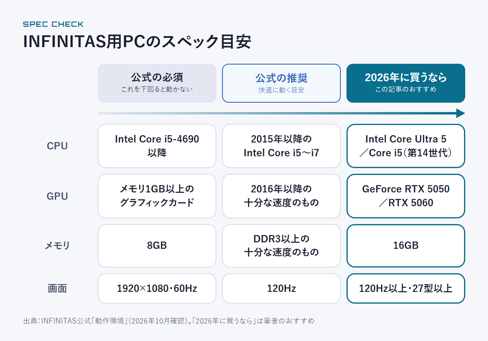
选购 INFINITAS 专用电脑时，最重要的是CPU 和显卡（GPU）这两项。内存和硬盘买回来之后还能轻松扩容，但 CPU 和显卡在购机后想要更换就非常麻烦了。
CPU 选择 Intel（Core i5 / i7 或 Core Ultra 5 / 7）
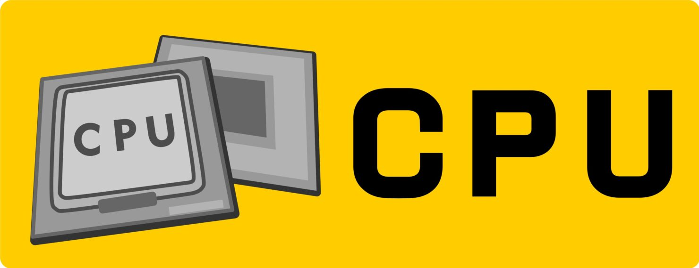
CPU 建议选择 Intel 处理器。官方运行环境无论是最低要求还是推荐配置，都只列出了 Intel 处理器，并未包含 AMD 处理器（Ryzen）。
虽然也有玩家反馈用 AMD 处理器也能运行，但既然官方没有保证兼容性，万一出问题时就很难排查“到底是不是 CPU 引起的”。既然打算新买电脑，实在没必要特地去选 AMD。
截至 2026 年，市面上在售的 Intel 处理器主要有以下两个命名系列，无论哪一种跑 INFINITAS 都绰绰有余：
- Core i5 / Core i7（第 12～14 代。例如“Core i5-14400F”，型号中千位及以上的数字越大代表越新）
- Core Ultra 5 / Core Ultra 7（作为 Core i 系列的继任者，自 2023 年底推出的新系列）
不过请注意，即便同属 Intel 阵营，也千万不要选 Celeron、Pentium、Intel N100 等廉价处理器。它们常见于低价笔记本或迷你主机，但性能偏弱，不适合用来玩游戏。
选择搭载 NVIDIA GeForce 独立显卡的电脑
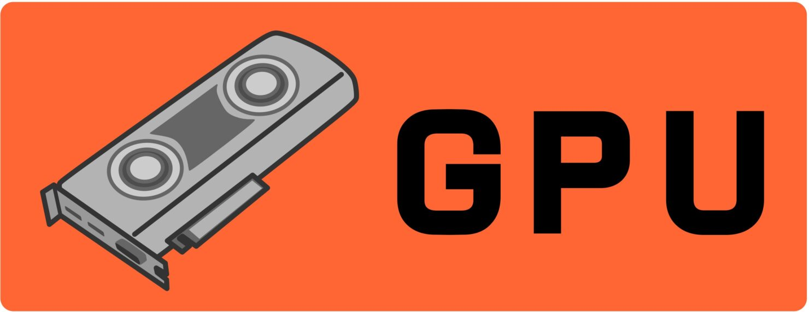
要玩 INFINITAS，请务必选择配备独立显卡（GPU）的电脑。官方最低要求明确写着“显存 1GB 及以上的图形卡”，仅靠 CPU 内置核心显卡（核显 / 集显）的电脑很可能会打不开游戏或运行不稳定。
显卡推荐使用 NVIDIA 的“GeForce RTX”系列。对于 INFINITAS 来说，“RTX 5050”、“RTX 5060”这样的入门级型号就已经绰绰有余，上一代的“RTX 4060”、“RTX 3050”也能毫无问题地流畅运行。此外，还能使用本文后半部分介绍的 NVIDIA 控制面板优化设置。
独立显卡（GPU）是专门负责图像渲染与画面处理的硬件。
游戏主机和游戏本基本都会搭载独显，而普通家用电脑或商务办公电脑大多没有。如果没有独立显卡，CPU 就要兼顾画面渲染，导致负担过重，游戏运行也就容易变得不稳定。
顺带一提，据说街机厅里 IIDX 的 Lightning Model（闪电框体）早期批次搭载的就是 NVIDIA 的 GeForce GTX 1650（参考资料）。
内存和硬盘不必太过纠结
内存方面，官方最低要求是 8GB，但考虑到可能会同时开浏览器或直播推流软件，选 16GB 会更稳妥。现在市面上的游戏电脑基本都标配 16GB 以上内存。
存储空间（硬盘容量）方面，只装 INFINITAS 本体的话 60GB 可用空间就够了。不过随着日后不断购买曲包，占用空间会逐渐增加，建议选择 500GB 及以上的 SSD 会更安心。内存和硬盘以后都可以再行加装。
【搭载 Intel 处理器】INFINITAS 推荐游戏台式机
下面精选了几款采用 Intel CPU + NVIDIA GeForce 显卡组合、能够流畅畅玩 INFINITAS 的台式整机。
如果只玩 INFINITAS，这几台的性能都游刃有余；但如果还打算兼顾最新 3D 大作或开直播，推荐首选搭载 RTX 5060 的主力机型。
售价可能会随时间变动，购买前请务必前往各品牌官网确认最新价格与配置。
【首选推荐】G TUNE DG-I5G60
| 价格 | 244,800 日元起（含税） |
|---|---|
| CPU | Intel Core Ultra 5 225 |
| 显卡 | GeForce RTX 5060（8GB） |
| 内存 | 16GB（8GB×2） |
| 存储 | 1TB SSD |
| USB 接口 | USB-A×9（背部 7 个、顶部 2 个）、USB-C×2 |
如果拿不定主意，选这台王道机型准没错。CPU 为 Core Ultra 5，显卡为 RTX 5060，不仅能轻松畅玩 INFINITAS，运行最新 3D 游戏也十分顺畅。
对 INFINITAS 玩家来说非常贴心的一点是它提供了多达 9 个 USB-A 接口。IIDX 手台、声卡（音频接口）和键盘都能直接插在主机上，完全不需要使用 USB 集线器。
前往 Mouse Computer 官网查看详情【性价比之选】FRONTIER FRGKB860/A
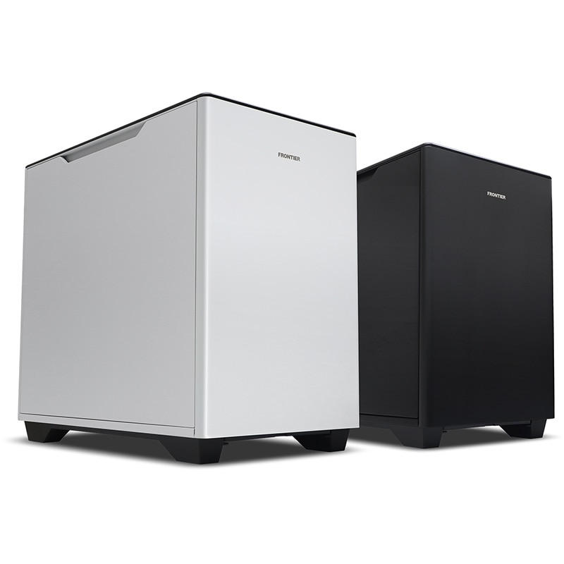
| 价格 | 224,800 日元起（含税） |
|---|---|
| CPU | Intel Core Ultra 5 225F |
| 显卡 | GeForce RTX 5050（8GB） |
| 内存 | 16GB |
| 存储 | 1TB SSD |
| USB 接口 | USB-A×8（顶部 2 个、背部 6 个）、USB-C×1 |
| 尺寸 | 宽 215×高 347×深 401mm |
这款机型改用比 RTX 5060 低一档的 RTX 5050，从而把价格压了下来。用来玩 INFINITAS 性能完全足够，而且同样配备了 1TB 的 SSD。
机身尺寸仅为宽 215mm×高 347mm，小巧紧凑，没有传统游戏主机那种笨重浮夸的感觉，放在书桌旁或桌下都很合适。
前往 FRONTIER 官网查看详情【促销期间最便宜】OMEN 16L（Intel 版）Velocity Core 型号
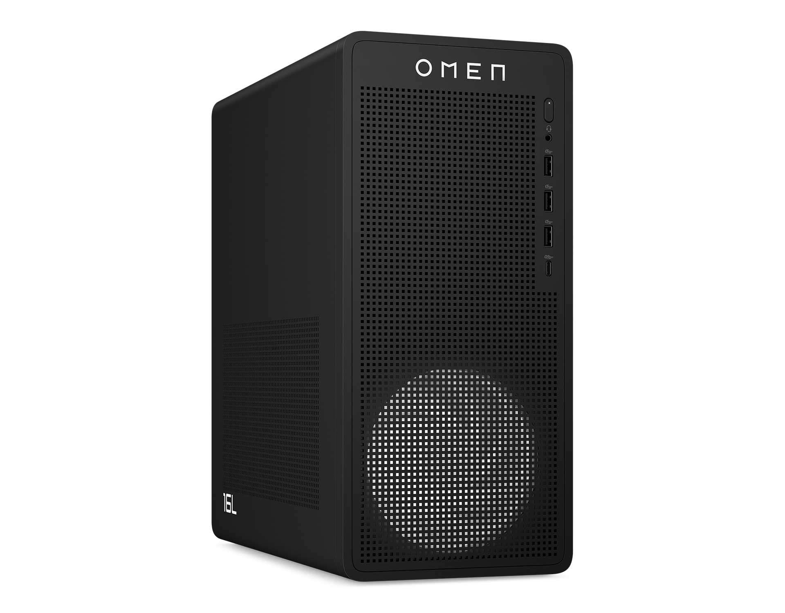
| 价格 | 189,800 日元起（含税） 活动促销价（原价 259,800 日元） |
|---|---|
| CPU | Intel Core i7-14650HX |
| 显卡 | GeForce RTX 3050（8GB） |
| 内存 | 16GB（8GB×2） |
| 存储 | 512GB SSD |
| USB 接口 | 前面板 USB-A×3、USB-C×1；背部 USB-A×4 |
惠普（HP）旗下游戏品牌“OMEN”的入门型号。促销期间是本文推荐的所有机型中最便宜的一款。
虽然显卡是上一代的 RTX 3050，但运行 INFINITAS 已经足够。活动结束后价格会大幅回升，想买的话建议趁促销下手。
截至 2026 年 10 月 27 日，官方商城显示为“待补货”状态，暂时无法立即下单。如果急着入手，建议选择上面两款。
前往 HP Directplus 官网查看详情【新手套装】G TUNE DG-I5G60（G TUNE 原创外设套装）
| 价格 | 279,800 日元起（含税） |
|---|---|
| 电脑主机 | 与首选推荐 G TUNE DG-I5G60 相同（Core Ultra 5 225 / RTX 5060 / 16GB / 1TB） |
| 套装内容 | 23.8 英寸 240Hz 电竞显示器（iiyama G-MASTER GB2471HSU-B1）、无线游戏鼠标、游戏键盘、头戴式耳机、鼠标垫 |
这套产品适合“第一次买游戏电脑，想把外设也一次性配齐”的玩家。它在首选推荐的 G TUNE DG-I5G60 基础上，附带了支持 240Hz 的电竞显示器以及键鼠等全套外设。
不过附带的显示器只有 23.8 英寸，拿来打 INFINITAS 会稍微偏小。如果对屏幕尺寸有追求，只单买主机再另配一台 27 英寸以上的大显示器也是不错的选择。
前往 Mouse Computer 官网查看详情【节省空间】INFINITAS 推荐游戏笔记本电脑
针对“家里没地方放台式机”或“偶尔需要携带出门”的玩家，下面也挑选了一款搭载 Intel CPU 与 RTX 显卡的游戏本。
不过，笔记本相比台式机存在以下短板。只要家里放得下，还是优先选台式机更稳妥。
- 同价位下性能不如台式机
- USB 接口数量较少
- 日后难以升级性能（无法更换独立显卡）
- 散热空间有限，容易积热
特别是 IIDX 手台，如果经过 USB 集线器转接，有可能会产生输入延迟。因此选购笔记本时，一定要顺便确认 USB-A 接口的数量。
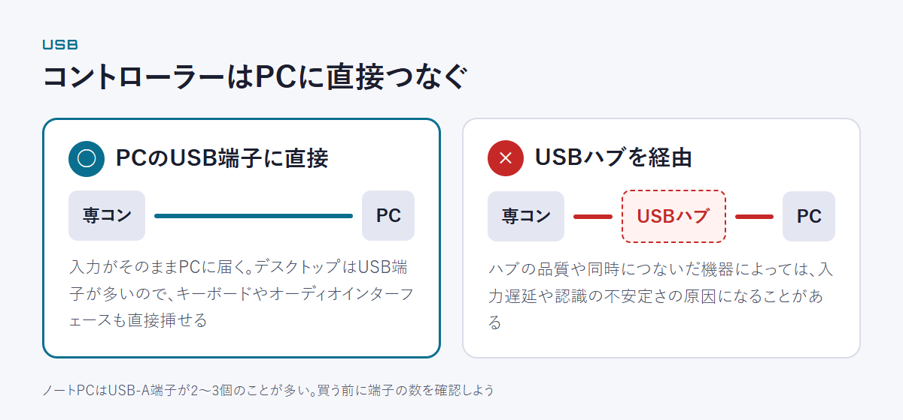
【笔记本首选】G TUNE P6-I5G60BK-B
| 价格 | 231,800 日元起（含税） |
|---|---|
| CPU | Intel Core i5-13500HX |
| 显卡 | GeForce RTX 5060 Laptop GPU |
| 内存 | 16GB |
| 存储 | 500GB SSD |
| 屏幕 | 16 英寸 2560×1600，180Hz |
| 重量 | 约 2.25kg |
| USB 接口 | USB-A×3（右侧 2 个、左侧 1 个） |
| 附带配件 | 罗技 Logicool G304 游戏鼠标 |
配备了相对较大的 16 英寸屏幕，刷新率高达 180Hz，完全支持 INFINITAS 的 120Hz 模式。
在游戏本中拥有 3 个 USB-A 接口算很充裕的了，同时插上手台和键盘后还能空出 1 个。既适合在买大显示器之前先过渡使用，也适合外接显示器当固定主力机用。
前往 Mouse Computer 官网查看详情也可以选择给现有电脑加装独立显卡
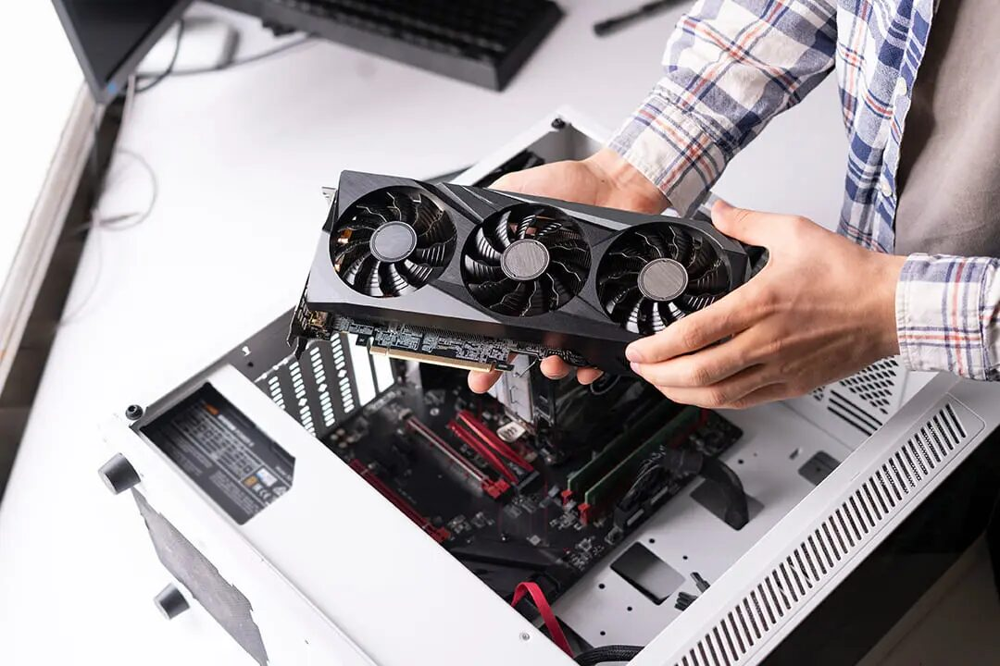
如果遇到“INFINITAS 打不开”或“运行不稳定、画面卡顿”的情况，有时只需给现有的台式机加装（或更换）一块独立显卡，就能立刻流畅游玩。
尤其是近 5～6 年内购买的台式机无法正常运行时，很多情况下其实是CPU 性能已经达标，只是缺一块独立显卡而已。换一台新电脑动辄要花 20 万日元以上，而单买一块显卡只需要几万日元就能搞定。
显卡安装本身并不难，但需要提前确认现有电脑是否装得下（机箱内部空间、电源额定功率、显卡独立供电接口）。部分品牌机采用的纤薄小机箱可能无法安装。具体加装步骤推荐参考下面这篇通俗易懂的教程：
针对 INFINITAS，想控制预算的话可以看 RTX 3050（6GB），想留出更多性能余量的话可以看 RTX 5050 左右。RTX 3050 的 6GB 版本无需独立供电即可运行，优点是电源功率偏小的电脑也能轻松加装；下面这款 MSI 型号还支持半高刀卡（Low Profile），连纤薄小机箱也容易装进去。而 RTX 5050 需要 8-pin 独立供电，选购前请先确认电源是否有对应接口。
为了畅玩 INFINITAS，电脑以外建议准备的设备
除了电脑主机以外，把下面这几样设备也配齐，能让 INFINITAS 的游玩体验更上一层楼：
- 支持 120Hz 及以上刷新率的大尺寸显示器
- IIDX 手台（控制器）
- 外接音箱、头戴式耳机或入耳式耳机等音频设备
下面逐一详细介绍。
支持 120Hz 及以上刷新率的大尺寸显示器
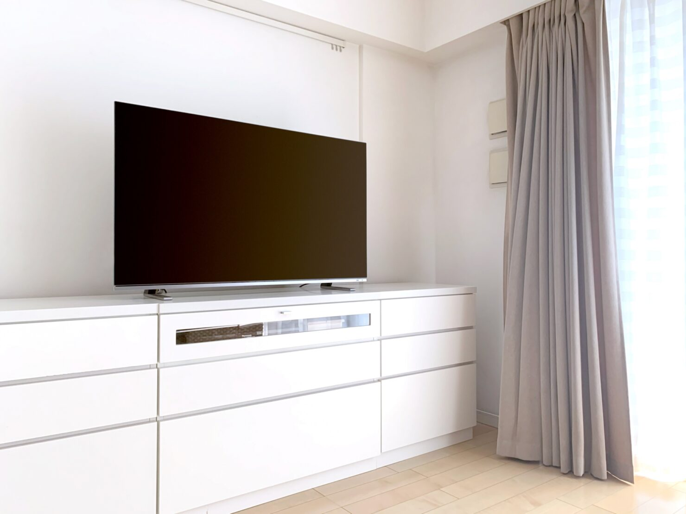
强烈建议使用支持 120Hz 及以上刷新率的大尺寸显示器（条件允许的话尽量选 27 英寸以上）来玩 INFINITAS。
由于 INFINITAS 无法调整轨道尺寸，如果用游戏本自带屏幕或 24 英寸以下的小显示器，往返街机厅和家里游玩时的视觉手感落差会非常大。
此外，好不容易配了高配置电脑，如果显示器不支持 120Hz 以上的刷新率，也根本发挥不出电脑的性能。
关于 INFINITAS 显示器的选购要点，下面这篇文章有详细讲解，欢迎参考：
IIDX 控制器（手台）
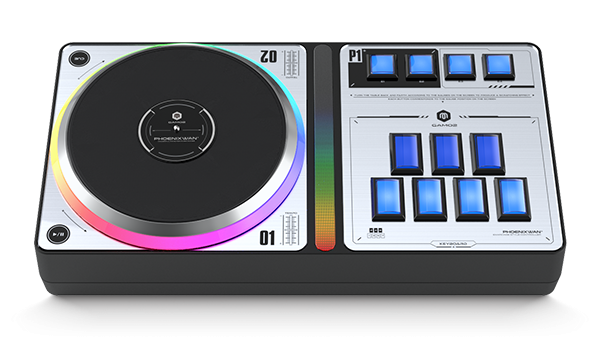
虽然 INFINITAS 也能用键盘玩，但既然都入坑了，大家肯定还是想用接近街机手感的控制器来练习吧。
最推荐的是 GAMO2 推出的“PHOENIXWAN+LMT”。
关于各类手台的详细介绍，可以参考下面这篇文章：
外接音箱、头戴式耳机或入耳式耳机
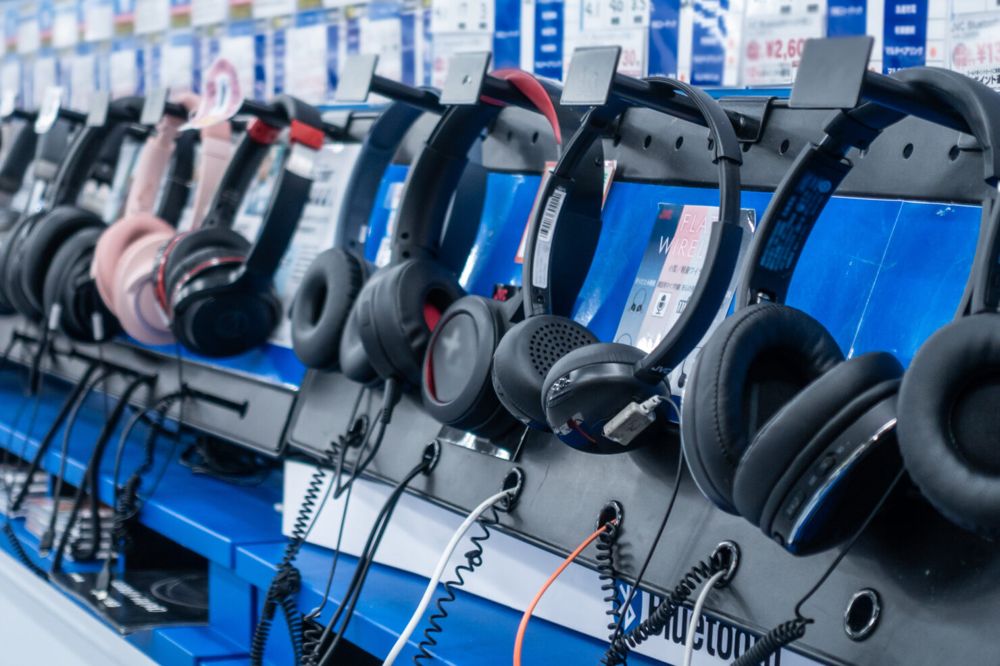
请务必为电脑单独配备外接音箱或耳机（头戴式/入耳式）中的至少一种。
如果通过电视或显示器自带扬声器输出声音，发声可能会出现明显延迟，因为电视和显示器内部会对音频进行额外的后处理。
为了把音频延迟降到最低，请务必将音箱或耳机直接连接到电脑上出声。
解决 INFINITAS 卡顿、音画不同步、判定异常的系统设置
如果在游玩 INFINITAS 时遇到音画不同步、画面卡顿或判定怪异等症状，建议尝试以下设置：
- 开启 WASAPI 独占模式
- 调整 NVIDIA 控制面板的 3D 设置
- 修改 bm2dx.exe 的属性设置
下面详细说明每一步的操作。
笔者游玩 INFINITAS 所使用的电脑配置如下：
| 操作系统 | Windows 11 Home |
|---|---|
| CPU | Intel Core i7-8700K |
| GPU | NVIDIA GeForce RTX2070 |
| 音频接口（声卡） | Behringer UMC202HD |
| 显示器 | TOSHIBA REGZA 43Z570K |
| 耳机 | Sennheiser HD599SE |
每个人的电脑硬件环境都不一样，请务必记住这里介绍的设置未必对所有人都最理想。用起来最顺手的那套设置，对你来说就是最好的。
开启 WASAPI 独占模式
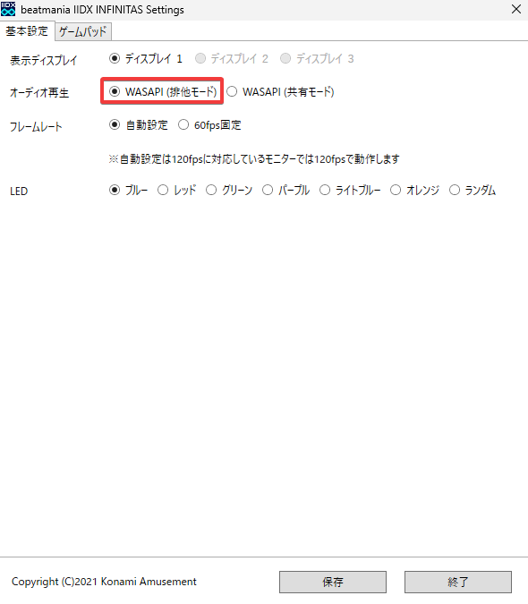
请在 INFINITAS 启动器的设置界面中，选择 WASAPI（独占模式 / 排他モード）。与共享模式相比，独占模式的发声延迟会大幅降低。
冒着被说不够严谨的风险简单解释一下：独占模式就是跳过电脑内部繁杂的系统音频处理流程，直接以高音质且低延迟的方式输出声音的模式。
不过，在某些电脑环境下开启独占模式后，可能会出现声音异常，甚至游戏根本无法启动的情况。
另外，有直播需求的玩家需要注意，独占模式下用 OBS 采集游戏声音需要额外折腾一下（例如双机推流或硬件音频分线等）。
关于音画不同步的具体排查与解决方法，这篇文章有更详细的说明：
调整 NVIDIA 控制面板的 3D 设置
如果目前游玩没有任何问题，其实不用去动它；但如果遇到音画不同步、卡顿或判定别扭的情况，调整 NVIDIA 控制面板的 3D 设置有可能带来明显改善。
搭载 NVIDIA 显卡的电脑，在桌面空白处右键点击即可看到“NVIDIA 控制面板”，点击即可打开。
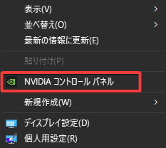
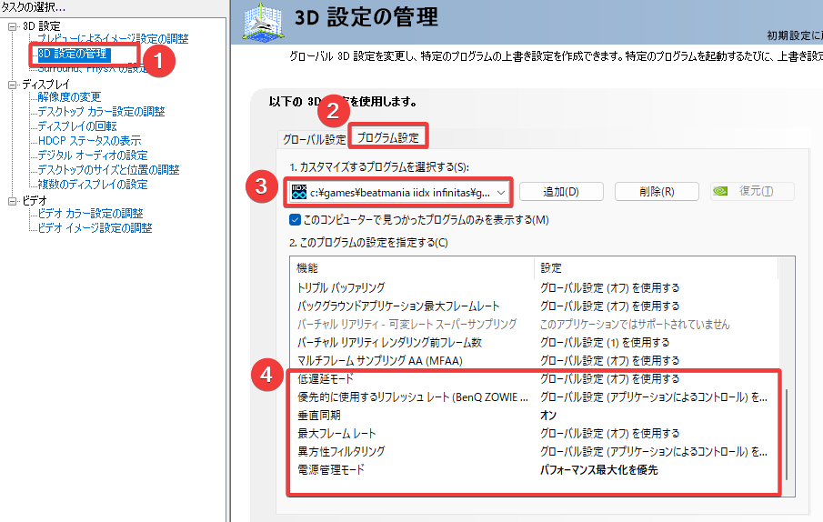
具体修改步骤如下：
- 在左侧菜单中选择“管理 3D 设置”
- 切换到“程序设置”选项卡
- 选择 INFINITAS 的主程序（bm2dx.exe） ※如果列表中没有，请手动点击添加
- 修改下方各项设置
不同玩家偏好的参数差异挺大的，我自己采用的是下面这套设置：
| 设置项 | 设定值 | 备注 |
|---|---|---|
| 低延迟模式 | 开启 | ・体感上对判定的影响较小 ・开“超高”的话，在关闭垂直同步时总觉得谱面容易卡顿，所以选了延迟较低且更稳妥的“开启” |
| 首选刷新率 | 最高可用 | ・在我平时用的 240Hz 显示器上，选这一项画面更清晰、读谱也更舒服 ・一般情况选“由应用程序控制”会更稳妥；如果 INFINITAS 无法以 120Hz 启动也建议改回该项 |
| 垂直同步 | 开启 | ・开启与关闭对判定位置的体感影响相当大 ・比起极致低延迟，我更看重谱面的流畅清晰度，因此保持开启 |
| 电源管理模式 | 最高性能优先 | ・听说默认设置会进入节能状态从而限制性能之类的 ・老实说自己并没有感受到明显区别 |
| 其他设置 | 基本不动 | ・老实讲改了也感觉不出差别 |
千万别因为觉得“判定好像有点怪”就反复折腾参数，很容易陷入越调越迷茫的死胡同。如果没遇到异常，直接照抄上面这套设置就行。作为参考，笔者的准度水平大概是能打上 Arena A1 的程度。
修改 bm2dx.exe 的属性设置
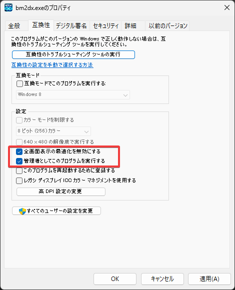
听说下面这项设置也最好顺手改一下（虽然笔者自己没怎么感受到区别）：
- 打开 INFINITAS 的安装目录（默认路径为 C:\Games\beatmania IIDX INFINITAS\game\app）
- 右键点击 bm2dx.exe，选择“属性”
- 在“兼容性”选项卡中勾选“禁用全屏优化”和“以管理员身份运行此程序”
- 点击“应用”保存
INFINITAS 电脑选购常见问题
搭载 Ryzen（AMD 处理器）的电脑也能玩 INFINITAS 吗？
虽然有人反馈能够正常运行，但官方运行环境只列出了 Intel 处理器，并不保证 Ryzen 平台的兼容性。如果手头已经有 Ryzen 电脑，值得一试；但如果是打算新购电脑，还是选 Intel 处理器更放心。
笔记本电脑能玩 INFINITAS 吗？
只要是搭载 Intel 处理器和 NVIDIA GeForce 独显的游戏本就可以玩。不过笔记本存在屏幕小、USB 接口少、容易积热等不足，有摆放空间的话还是更推荐台式机。搭载 Celeron 或 N100 的廉价轻薄本无法流畅游玩。
没有独立显卡（只有核显）的电脑能玩吗？
官方最低配置要求“显存 1GB 及以上的独立显卡”，因此无独显电脑不在支持范围内。即便侥幸能启动，运行也容易不稳定。如果是台式机，建议考虑自行加装一块独立显卡。
Mac 可以玩 INFINITAS 吗？
官方支持的系统仅有 Windows 10（64 位）和 Windows 11，不支持其他操作系统。基本上可以认为 Mac 和 Chromebook 均无法游玩。
在哪里可以查看自己现有电脑的配置？
打开 Windows 任务管理器（快捷键 Ctrl＋Shift＋Esc），切换到“性能”选项卡即可查看 CPU、内存和 GPU 的具体型号。如果 GPU 一栏里没有出现“NVIDIA GeForce”或“AMD Radeon”，只显示“Intel UHD Graphics”之类，就说明没有搭载独立显卡。
总结
想要流畅游玩 INFINITAS，只需一台搭载 Intel 处理器和 NVIDIA GeForce 显卡的入门级游戏电脑即可。以目前的市场行情来看，Core i5 / Core Ultra 5 级别处理器搭配 RTX 5050 / 5060 级别显卡是最恰到好处的组合。
相比线下家电卖场，直接去 Mouse Computer 或 FRONTIER 这类品牌的官方商城选购，不仅可选型号更丰富，促销活动也更频繁。如果具备一定的电脑硬件知识，给现有的台式机加装一块独显也是很划算的选择。
电脑准备好之后，不妨再一并审视一下显示器、手台和音频输出方式，打造一套称心如意的居家练琴环境吧。
💬 读者评论与作者答疑（2 组对话）